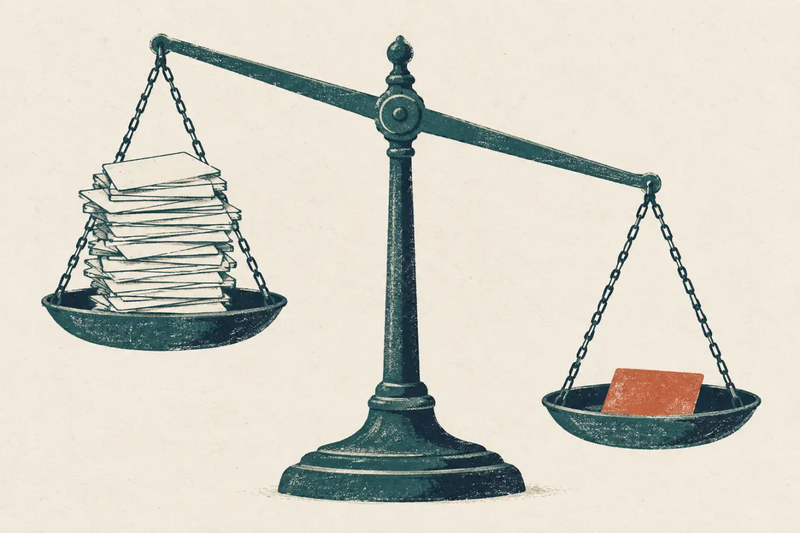
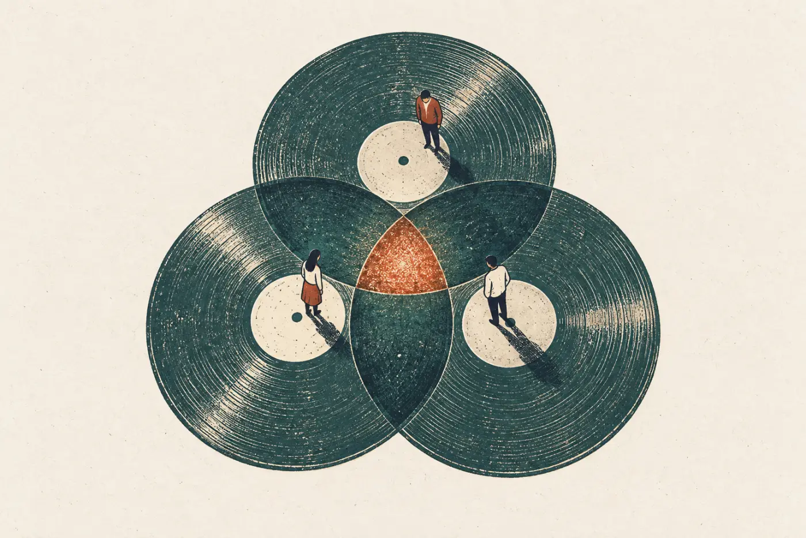
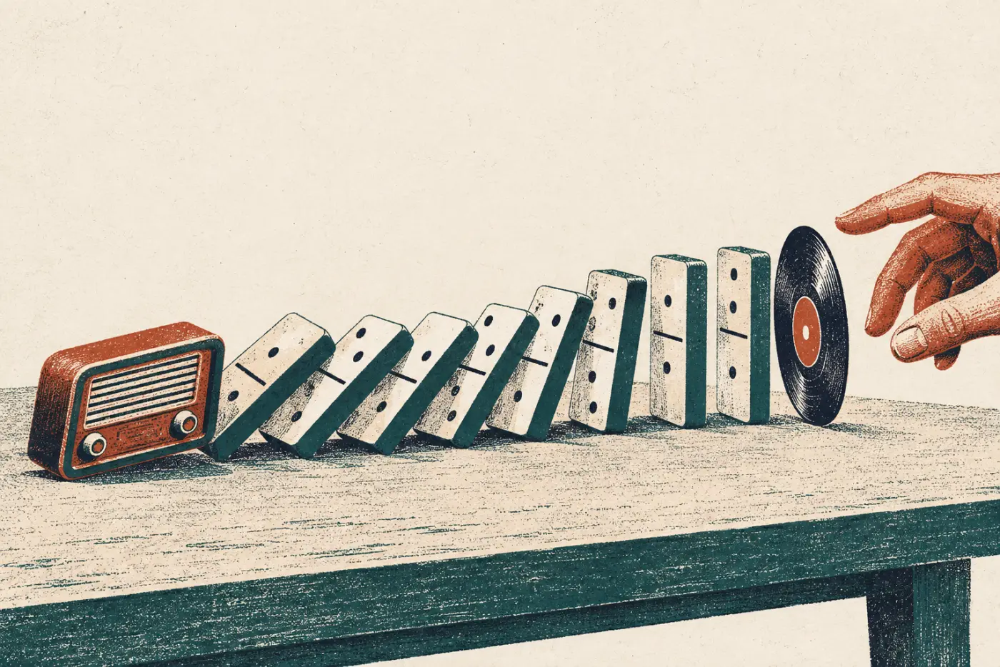
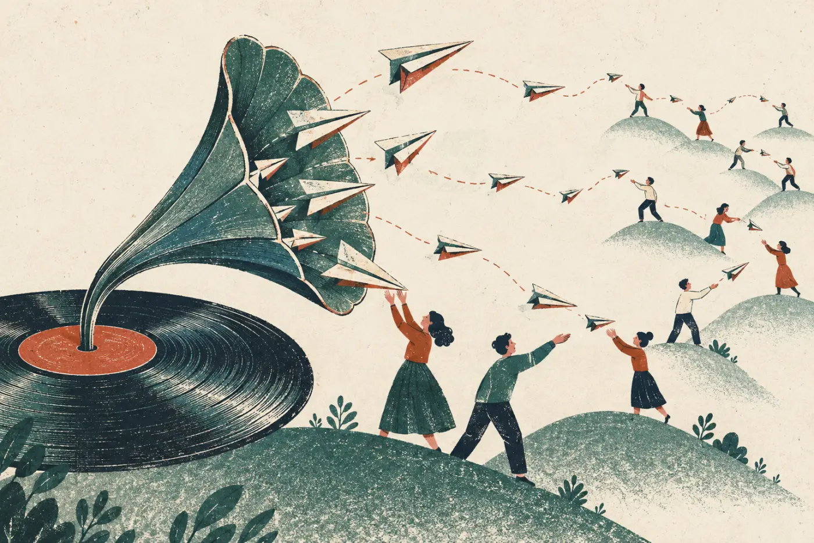

2013 年，网易云音乐刚上线。小明每天花一个小时看用户反馈，需求池里的声音越来越多。
被提得最多的，是“加个排行榜”。它被提的次数，是另一条需求的成百上千倍。那条冷门需求是：能不能把我在别的 App 里收藏的歌，一键导过来？
如果是你，下一个版本先做哪个？

B 面 · 做选择
AI产品思维第二课：做什么、先做什么、不做什么

写在前面
在 A 面，我们学会了分辨真需求。可真需求也做不完：用户想要的，永远比你的时间多。
Vibe Coding 第一课教过一个砍功能的办法：拿掉它，产品还能用吗？能用，就以后再说。可要是几个选项都“能用”，或者用户呼声最高的那个，你偏偏不该做呢？
这一面讲的，就是这种时候怎么选。故事还是网易云音乐，主角还是产品经理小明。
TRACK 01 · 开场
几百个用户要排行榜，只有几个人提到导入歌单。
2013 年，网易云音乐刚上线。小明每天花一个小时看用户反馈，需求池里的声音越来越多。
被提得最多的，是“加个排行榜”。它被提的次数，是另一条需求的成百上千倍。那条冷门需求是：能不能把我在别的 App 里收藏的歌，一键导过来？
如果是你，下一个版本先做哪个？

点一张卡片，选你下个版本先做的需求。
小明和团队先做了导入歌单。上线时没有大张旗鼓地宣传，只在一两百人的种子用户群里发了个消息。消息在乐迷圈子里传开，几十万资深乐迷带着自己的收藏搬了过来。
而排行榜呢？对手们早就有了，再做一个也显不出什么不同。为什么偏偏是导入歌单？下一条 Track 拆开来看。
TRACK 02 · 找切入点
不跟对手比谁的功能多，而是找一个对手顾不上、你又恰好擅长的口子。
2013 年的在线音乐是一片红海：酷狗、酷我、QQ 音乐、天天动听这些老牌播放器，加起来占了近八成市场，做的都是大众用户。
小明用两个维度给用户分群：年龄，和对音乐的热爱程度（见下图）。他选了一小群人先切进去：资深音乐爱好者。他们的痛点是找不到更多好音乐；他们能影响身边的人；当时也没有谁把这件事做好。这叫细分。
同时，他看清了行业在怎么变：人们正从电脑转到手机上听歌，收藏要能云同步，听歌越来越碎片化，用户越来越“懒”，也越来越爱互动。这叫新兴：顺着变化走，而不是跟在老对手后面。
具体到这群资深乐迷，切口在哪？把线索分进三个圈试试。

把 9 张线索卡分进对应的圈。有几张是干扰卡，放进“都不是”。电脑上可以拖；手机上先点卡片，再点圈。
一键把别处收藏的歌单搬过来，搬过来就能免费下载高品质音乐。越是收藏多的人，越可能是乐迷圈子里的意见领袖，他们一搬，身边的人就跟着来了。
有：还没攒下收藏的年轻人。中学生、大学生的音乐口味正在形成，还没被老产品“教育”出习惯。陪着网易云长大的这批人，养成的新习惯很难再被别人改掉。
十几年前，影迷都上时光网查电影资料。后来豆瓣电影没跟它比谁的资料库全，而是做了评分、影评和推荐，把影迷吸走了。再后来，购票 App 和视频网站也没跟豆瓣比影评，而是从“买票”“看片”切进去，抓住了更多普通观众。每一次换代，新玩家都没有在对手最强的地方硬碰。
TRACK 03 · 核心功能
第一版的核心只能有一个。用户一打开，就该知道你是干什么的。
要帮资深乐迷“发现好音乐”，小明手上有五个候选：歌单、标签、电台、MV、音频直播聊天室。每一个都能做，每一个都“能用”。
可是新产品一上来功能太多，用户反而看不清它是干什么的。第一版的核心，只能挑一个。
这时 Vibe Coding 的“拿掉还能用吗”就不够用了。要多问一句：哪一个最能撑起长期的目标？
五个候选里，先把不适合做第一版核心的三个放一边。
剩下歌单和标签。看看各自的利弊，你选哪个做核心？
小明选了歌单。标签更灵活，但歌单让用户自己创作、彼此互动，更能撑起“做一个乐迷社区”的长期目标。歌单的缺点影响不大：重复的歌单可以用技术手段往后排，网状结构也不是非有不可。
排行榜、新歌、歌曲分类，是当时最常见的找歌方式，用户也常用。第一版要不要放进去？
先用 Vibe Coding 的标准问一句：拿掉它们，产品还能用吗？能，还有搜索和歌单。小明把它们全砍了：除了搜索，第一版发现音乐只有歌单这一条路。新用户一打开就知道，这是一个以歌单为主的产品。
再往上看一层：歌单只是三步里的第一步。用户做歌单、听歌单攒下的数据，后面的推荐要用。
TRACK 04 · 往上层思考
用户呼声最高的需求，也可能是你最不该做的那个。
一个需求是真的，也是目标用户想要的，是不是就该做？小明遇到过三次让他犹豫的时候。
每一次，他都把这个功能放回整个产品里看：做了它，别的地方会发生什么？这就是往上层思考：一个功能只是一个零件，要看它装进整台机器以后，会推倒什么、撑起什么。
下面三张决策卡，你来拍板。

TRACK 05 · 往不同思考
满足了一百条反馈，也可能没有一个人帮你说好话。
为什么花力气做了很多用户要的功能，却没人主动去安利？因为那些功能是用户觉得理所当然的。小明总结，好口碑要凑齐三个条件：
超出预期。要么快，抢先用上新东西；要么深，把细节做到极致；要么换一个维度，和用户最基本的感受拉开差距。
乐意传播。让人感同身受、打开眼界，或者能拿来展示自己。
用户够多。只有一小撮人在意的事，口碑传不远。

音效优化在同一条线上往前走了一点；评论区直接跳到了另一条轴上。下面 5 个功能，你来判断：会有人主动安利吗？
TRACK 06 · 收尾
大多数决定，只有五成把握。
小明说，他做过的产品方案，很少有八成以上的把握，多数只有五成左右。
导入歌单就是这样。设计和技术都准备好了，他还在犹豫：这么做会不会得罪对手、伤了品牌？一个周六早上，他刷到用户在讨论：“要是能把别处的精选集搬过来就好了。”他终于下了决心，把它临时加进下周的版本，向团队道歉、担下责任，上线后看数据判断成败。
拿不准的时候，他的办法是：抓重点，先想清楚最重要的是什么；不追求完美，没有完美的方案，速度也很重要；做实验，用最低的成本，比如一个简陋的原型、一次 A/B 测试，看用户的反馈和数据。还可以反过来想：先想想这件事会怎样失败。
不停在第一层。用户提的是办法，一层层往下问，找到动机。
先定目标，再拆出问题，最后才想办法。能放弃的就放弃。
把一个功能放进整个产品里看：它会推倒什么、撑起什么。
不在对手最强的地方硬碰；换一个维度，或者反过来想。
沿用 Vibe Coding 的句式。说不成一句话，通常说明还没想清楚。
想想网易云的资深乐迷：需求没被满足、能影响别人、还没有对手做好。
左边写留下的那一个，右边写为了它放弃了什么。
别人会要、但你暂时不做的一两个功能，写上理由。
哪一处会让用户想截图发给朋友？是快、深，还是换了一个维度？
一周之内、不写代码，你打算怎样验证它？
收尾